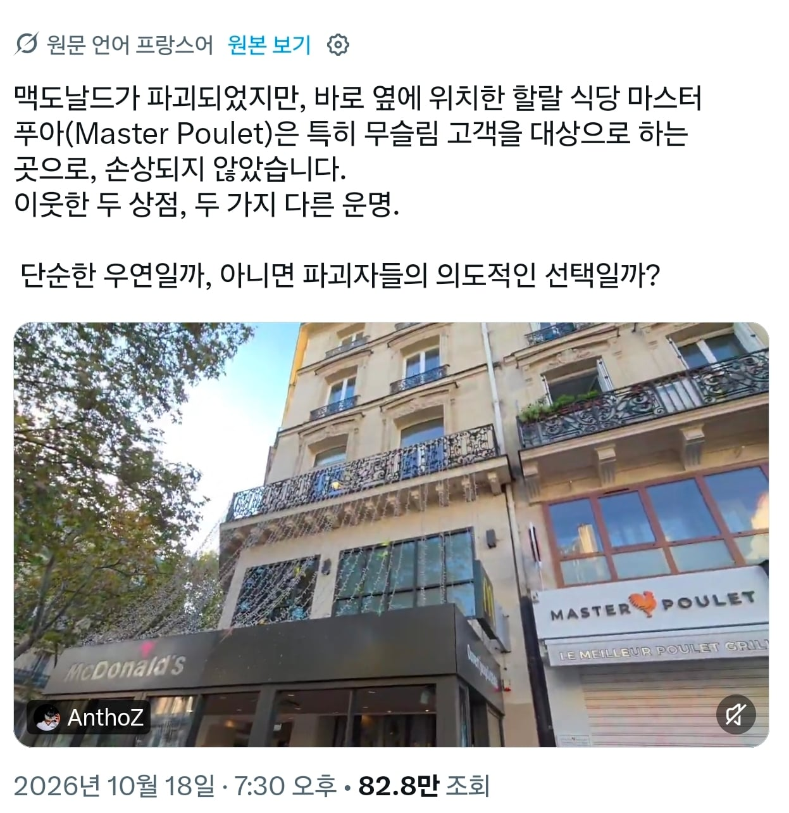

맥도날드가 개박살나는동안 바로옆의 할랄음식점은 멀쩡함
또한 수많은 모스크들도 멀쩡

맥도날드가 개박살나는동안 바로옆의 할랄음식점은 멀쩡함
또한 수많은 모스크들도 멀쩡
안동찜닭도 할랄 ㅇㅈㄹ 해서 한 말인데 ㅋㅋ
닭을 파니까 할랄이야 랑
할랄인증을 받은 음식점 이야
랑은 아주 큰 차이가 있음
초강경 무슬림은 치킨도 할랄인증 없으면 안먹는다는 년놈들 많으
마트가털렸는데돼지고기만남은거보면모르겠냐곸ㅋㅋㅋㅋㅋㅋㅋㅋㅋ
ㅋㅋ시발 돼지고기 먹는건 안되는데 약탈은 오케이야?
난 모든 종교가 착하게 살라는 기본 베이스는 있다고 생각함. 그걸 지좆대로 해석하는 씹새끼들이 늘 문제라고 여기지
남들이 싫어하는짓 하지말고 때리지말고 죽이지말고 욕심부리지마라 를 그대로 안쓰고 멋들어지게 써보겠다고 이상하게 써놓으니까 지좃대로 해석하는거 같음
무슨 소리. 모스크를 털면 모가지가 썰리는데 거길 왜 털죠
프랑스 극빈층, 하류층에 무슬림 이민자 출신들이 많고, 그들이 이번 시위에 많이 참가해서 그런 것 같아
역사적으로 그들을 이용하기 위해 받아들인 것은 프랑스였지
경제적환경이나 교육환경이 좋지 못하니 가난이 대물림된 것이 크지 않을까?
특정인들에게는 축제네 ㅅㅂ ㅋㅋㅋㅋㅋㅋ
프랑스에 무슬림 많으니까 할랄 인증받고 장사 하겠지. 뭔 대단한 이슬람 프랜차이즈가 아니란 말임.